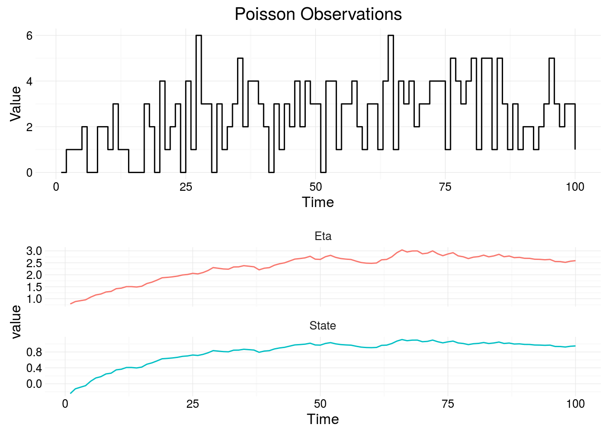
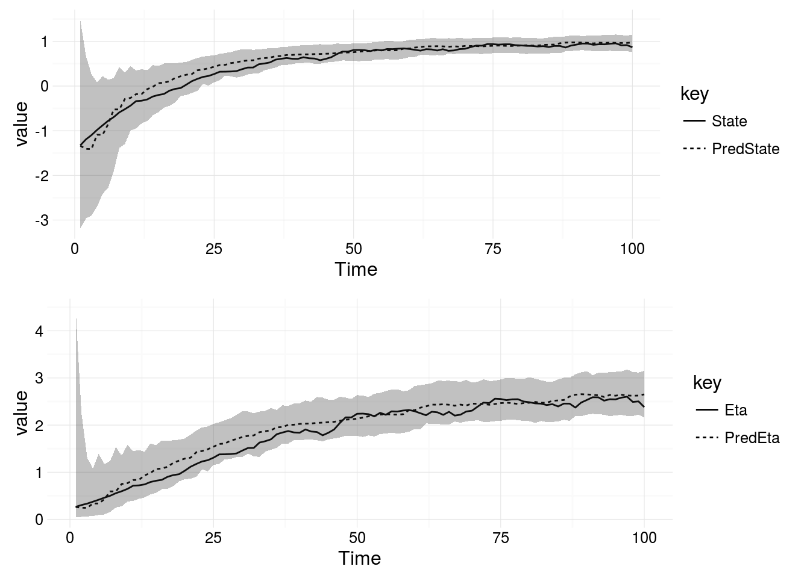

The particle filter is a highly flexible filter, used to perform Bayesian inference for non-linear and non-Gaussian state space models. It works by simulating many realisations of the state space in a particle cloud and determining which are the closest fit to observed data by calculating the observation likelihood. This type of simulation can be slow. The Kalman Filter is an exact solution for calculating the latent state for Gaussian, Dynamic Linear Models. The Kalman Filter is very efficient and accurate as it doesn’t require simulation, but the class of models we consider can’t be solved analytically in closed form. Other filters, such as the Extended and Unscented Kalman Filter have been developed, which apply to non-linear state space models.
In our application, it is natural to use a particle filter. The particle filter can operate with observations arriving irregularly, it can handle non-Gaussian observation models and non-linear transformations.
Note, in this section we motivate and describe a simple application of the bootstrap particle filter to a Partially Observed Markov Process model. If you are already familiar with the bootstrap filter and would like to apply it using the API then please skip this section.
The bootstrap particle filter () is a simple filter able to estimate the state space of a POMP model. The latent state is governed by a transition kernel which we assume realisations can be simulated from, \(\textbf{X}(t_i) \sim p(\textbf{x}(t_i)|\textbf{x}(t_{i-1}))\). The process is observed through an observation model \(Y(t_i) \sim \pi(y(t_i) | \eta(t_i))\).
The bootstrap particle filter is used to calculate the unobserved system state by approximating the filtering distribution, \(p(\textbf{x}(t_i)| y(t_{0:i}))\). The algorithm to determine an empirical approximation of the unobserved system state at each observation time is presented below:
A simple illustrative particle filter can be implemented in Scala as follows:
trait ParticleFilter {
import math.{exp, log}
import ParticleFilter._
val resample: (Vector[State], Vector[LogLikelihood]) => Vector[State]
val stepFunction: (State, TimeInterval) => State
val dataLikelihood: (State, Observation) => LogLikelihood
val mean: Vector[LogLikelihood] => LogLikelihood = w => w.sum/w.length
def filterStep(s: FilterState, y: Data): FilterState = {
val dt = y.time - s.t0
val x = resample(s.particles, s.weights)
val x1 = s.particles map (stepFunction(_, dt))
val w = x1 map (dataLikelihood(_, y.observation))
val ll = s.ll + log(mean(w map exp))
FilterState(x1, w, y.time, ll)
}
}
object ParticleFilter {
type Time = Double
type Observation = Int
type LogLikelihood = Double
type State = Double
type TimeInterval = Double
case class FilterState(
particles: Vector[State],
weights: Vector[LogLikelihood],
t0: Time,
ll: LogLikelihood)
case class Data(time: Time, observation: Observation)
}This abstract trait we have defined above is a simple shell for a particle filter. In order to implement a concrete class representing a bootstrap filter for a specific model, let’s consider a simple model with a one-dimensional state-space and a Poisson observation model:
\[ \begin{align*} N(t) &\sim \textrm{Poisson}(\lambda(t)) \\ \lambda(t)|x(t) &= \exp\{x(t)\} \\ \textrm{d}X(t) &= \mu + \sigma \textrm{d}W(t) \end{align*} \]
This Poisson model’s latent state evolves according to generalised Brownian motion and the linking function, \(g\), is the exponential function, since the rate of a poisson distribution, \(\lambda(t)\) is always positive. Now we must implement the functions declared in the trait ParticleFilter.
m0 and c0 represent the parameters of the initial distribution of the state, represented by a draw from a Gaussian distribution. mu and sigma are the parameters of the Markov transition kernel, which is generalised Brownian motioncase class Parameters(m0: Double, c0: Double, mu: Double, sigma: Double)import breeze.stats.distributions.Gaussian
def stepBrownian(p: Parameters): (TimeInterval, State) => State = {
(x, dt) => Gaussian(x + p.mu * dt, math.sqrt(p.sigma * p.sigma * dt)).draw
}import breeze.stats.distributions.Poisson
def poissonLikelihood: (State, Observation) => LogLikelihood = {
(x, y) => Poisson(exp(x)).logProbabilityOf(y)
}import breeze.stats.distributions.Multinomial
import breeze.linalg.DenseVector
def multinomialResample(x: Vector[State], w: Vector[LogLikelihood]): Vector[State] = {
val xInd = Multinomial(DenseVector(w.toArray)).sample(x.length).toVector
xInd map ( x(_) )
}ParticleFilter trait:
case class PoissonPf(p: Parameters) extends ParticleFilter {
val stepFunction: (State, TimeIncrement) => State = stepBrownian(p)
val dataLikelihood: (State, Observation) => LogLikelihood = poissonLikelihood(p)
val resample: (Vector[State], Vector[LogLikelihood]) => Vector[State] = multinomialResample _
}In order to use the particle filter on a collection of data, we must first initialise a particle cloud of size n using the initial parameters and sampling n times from a Gaussian distribution:
val p = Parameters(0.1, 3.0, 0.1, 1.0)
val particles = Gaussian(p.m0, p.c0).sample(n)Now, filterStep can be used on a Stream or List of data using scanLeft, the initial state of the particle filter is populated with particles and a vector of weights each equal to 1/n:
val data: Stream[Data] = \\ A stream of data
val pf = PoissonPf(p)
val init = FilterState(particles, Vector.fill(n)(1.0/n), ll = 0.0, t0 = 0.0)
data.scanLeft(init)(pf.filterStep)The marginal likelihood of the path given the observed data and parameters can be approximated by calculating the product of the average of the weights at each time point. This pseudo-marginal likelihood is used in the [[Particle Marginal Metroplis Hastings|Streaming-MCMC]] algorithm, which can be used to calculate the full joint posterior \(p(x, \theta | y)\). filterStep will calculate this, in conjunction with scanLeft, however, scanLeft emits each successive iteration. If the goal is to simply approximate the log-likelihood of a path, a simpler solution is to use foldLeft:
data.foldLeft(init)(pf.filterStep).llIn order to filter information arriving in real-time, given we have access to the marginal posterior distribution of the parameters given the data so far, we simply apply the particle filter to each new observation arriving. However, the particle filter relies on the previous value of the particle cloud and the time difference between each observation since our models allow the possibility of irregularly observed data.
This means we need to store state in the stream, let’s first consider how to construct a stream of simulated data. We can use Source.unfold from Akka streaming which allows us to construct infinite streams, as long as the function returns a Some. The function starts with a zero value, then passes the first value of the tuple inside the Some back into the function. In this way we can easily construct Markov chains as streams.
val mod: Model = // a parameterised model
val dt = 0.1 // the time step for the simulation
val d0 = simStep(mod.x0.draw, 0.0, dt, mod)
val sims = Source.unfold(d0)(x => Some((simStep(x.sdeState, x.t + dt, dt, mod), x))) Now we can simulate values from any model as a stream. Now we must apply a particle filter to the stream, assuming we don’t know the values of the latent variables, which of course we do because the data is simulated. In order to keep track of state, we can use a scan.
val n = 1000
val t0 = 0.0
val particleCloud = Vector.fill(n)(mod.x0.draw)
val initState = Vector(PfState(t0, None, particleCloud, State.zero, IndexedSeq[CredibleInterval]()))
observations.
scan(initState)((d, y) => filterStep(y, d, mod, 200))scan accepts a zero value, initState and a function from a single observation, y and the previous state d to calculate the state given the current observation. Using scan in this way, outputs the value of the state as each observation is received.
Here we present an example of filtering a model with a Poisson observation model. First we simulate a Poisson model with an Ornstein-Uhlenbeck state space.
import model.{LeafParameter, GaussianParameter, OrnsteinParameter}
import model.SimData._
import model.POMP.PoissonModel
import model.StateSpace._
val p = LeafParameter(
GaussianParameter(-2.0, 1.0),
None,
OrnsteinParameter(theta = 2.0, alpha = 1.0, sigma = 1.0))
val mod = PoissonModel(stepOrnstein)
val times = (1.0 to 100.0 by 1.0).toList
val sims = simData(times, mod(p))The figure below shows a simulation from the Poisson model, the state space of the Ornstein-Uhlenbeck process can vary on the entire real line, the parameter space of the Poisson model is \(\mathbb{Z}^+\) as the parameter, \(\lambda(t)\), is the mean of a counting process. The log-link function is used to transform the state space to the appropriate parameter space, \(\lambda(t) = g(x(t)) = \exp(x(t))\)

Now we can use the particle filter to estimate the state space, the scala code is given here and is available in the examples in the Github repo.
val data = // poisson data
val p = LeafParameter(
GaussianParameter(6.0, 1.0),
None,
OrnsteinParameter(theta = 6.0, alpha = 0.05, sigma = 1.0))
// declare a new filter type including the model, resampling scheme and starting time, t0
val filter = Filter(mod.model, ParticleFilter.multinomialResampling, t0 = 0.0)
// use the filter to return the state and credible intervals with 1000 particles
filter.filterWithIntervals(data)(1000)(mod.p)